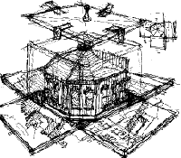

|  |
The Cupola (1997) is a work based on the top section of my
house. My immediate interest was the panoramic view on Brooklyn. Secondarily,
I wanted to a create a miniaturized version of my house, to be a portable reminder of its
structure and beauty.
Go on a TOUR OF THE HOUSE to see a
photograph of the interior of the Cupola. |
|